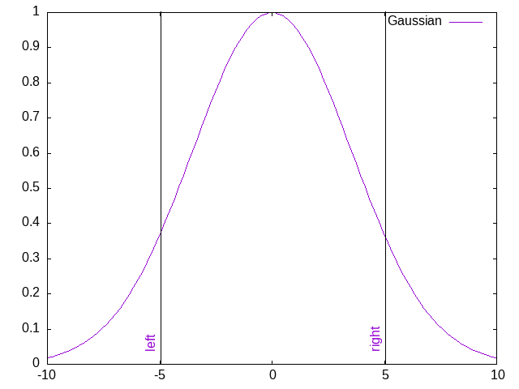

Beside free_form()
Some task are recurrent and need to be easily performed. This is the role of these extra functions. I will extend this in the future. If you are interested, any contribution is open and welcome :)
Set plot title
A very basic example
set_title(gp,"My_plot_title",enhanced=false)is equivalent to
free_form(gp, "set title \"My_plot_title\" noenhanced")Plotting vertical bars
An easy way to plot vertical bars:
using GnuplotScripting
gp = GnuplotScript()
add_vertical_line(gp,-5.0,name="left")
add_vertical_line(gp,+5.0,name="right")
free_form(gp,"plot exp(-x*x/25) with line t 'Gaussian'")
export_png(gp, "vlines.png")
See add_vertical_line.